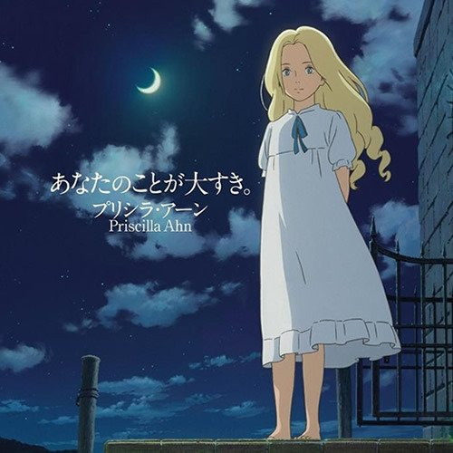

HOME

Fine on the Outside
[Theme song of the Studio Ghibli film , When Marnie Was There]
中英文歌词
I never had that many friends growing up / 我從不擁有許多朋友
So I learned to be okay with just me / 所以我學著一個人也能過得很好
Just me, just me, just me / 一個人, 一個人, 一個人
And I'll be fine on the outside / 所以我在外面也能過得很好
I like to eat in school by myself anyway / 我喜歡自己在學校吃飯
So I'll just stay right here / 所我就待在這裡
Right here, right here, right here / 在這裡, 在這裡, 在這裡
And I'll be fine on the outside / 所以我在外面也能過得很好
So I just sit in my room after hours with the moon / 在其他的時間月亮伴隨著我靜坐在房裡
And think of who knows my name / 思考著有誰知道我的名字
Would you cry if I died / 逝世之後有誰為我哭泣
Would you remember my face? / 有誰記住我的面容
So I left home I packed up and l moved far away / 所以我離開家，收拾行李遠走他鄉
From my past one day and I laugh / 遠離我的過去
I laugh, I laugh, I laugh, I sound fine on the outside / 我笑， 我笑，我笑，在外面我也能很好
Ha ha ha
Sometimes I feel lost, sometimes I'm confused / 有時我感到失落，有時我感到困惑
Sometimes I find that I am not alright / 有時我覺得我不行了
And I cry, and I cry and I cry / 然後我哭，我哭，我哭
Ha ha ha
So I just sit in my room after hours with the moon / 在其他的時間月亮伴隨著我靜坐在房裡
And think of who knows my name / 思考著有誰知道我的名字
Would you cry if I died / 逝世之後有誰為我哭泣
Would you remember my face? / 有誰記住我的面容